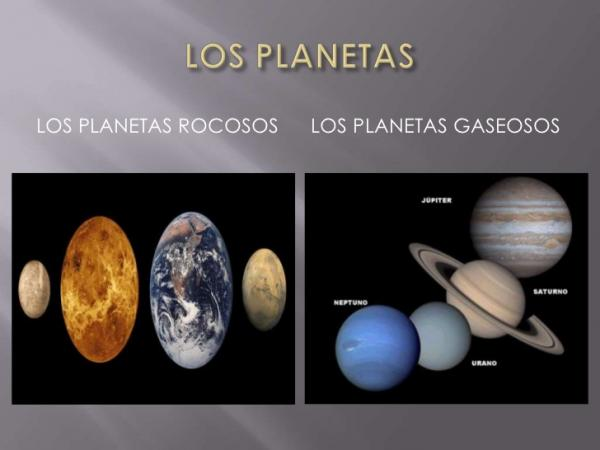

Clases de planetas según su composición
Una de las principales formas de clasificación de los planetas se hace según la composición del planeta mismo. Los planetas, según su composición, pueden ser:
- Planetas helados o de hielo. Son planetas compuestos principalmente por carbono, nitrógeno, hidrógeno y oxígeno. Estos elementos se combinan para formar: agua, metano, amoniaco, monóxido de carbono, nitrógeno y dióxido de carbono, todos ellos en forma de hielo. Este conjunto de compuestos se denomina hielo astrofísico o hielo planetario.
- Planetas gaseosos: Los planetas gaseosos están compuestos principalmente por hidrógeno y helio. Estos planetas tienen una densa capa atmosférica, donde se encuentran retenidos estos gases debido a la fuerte atracción que causa el campo magnético. Debido precisamente a la gran fuerza de su campo electromagnético, los planetas gaseosos suelen tener numerosas lunas o anillos.
- Planetas rocosos. Los planetas rocosos están formados principalmente por magnesio, silicio, oxígeno y hierro. Las rocas que forman la mayoría de estos planetas suelen ser silicatos (rocas ricas en silicio y magnesio) enriquecidas con gran cantidad de hierro. Dentro de esta clasificación podemos encontrar subgrupos, como veremos más adelante. Hay por ejemplo planetas rocosos silicatos, como la Tierra y Venus, planetas rocosos metálicos como Mercurio o planetas de roca helada como Tritón.
